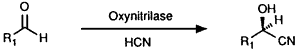

Abstract
Asymmetric hydrocyanation of aldehydes was accomplished using almond meal, containing the enzyme oxynitrilase. Optically active cyanohydrins with high levels of enantiomeric purity were obtained following a simple procedure.
Asymmetric hydrocyanation of aldehydes has been a topic of great interest in the past decade. The products of these reactions, optically active cyanohydrins, are key intermediates in the synthesis of several important classes of chiral compounds, such as α-hydroxy acids1, acyloins2 and β-amino alcohols3,4. Optically active cyanohydrins can be prepared using chiral catalysts5-7 or the enzyme oxynitrilase (E.C. 4.1.2.10 and E.C. 4.1.2.11).
The enzyme catalyzed reaction has thus far been reported with crude extracts from almond meal2 and with purified oxynitrilases from sorghum8 and almonds9. The latter procedure uses oxynitrilase supported on cellulose and ethyl acetate as the solvent. Drawbacks of this method are the need to have the disposal of purified enzyme and the use of free hydrocyanic acid (HCN). We wish to report a new enzymatic method for the asymmetric hydrocyanation of aldehydes. The method is similar to the cellulose method, but does not suffer from drawbacks mentioned earlier.
Table 1:
Optically active cyanohydrins 2 from aldehydes 1 using almond meal.

| Aldehyde | Time | Temp. | Conv. | Product | Recovery | e.e. |
| Benzaldehyde (1a) | 16 h | 4°C |
100% |
(R)-2a |
98% |
99% |
| 4-MeO-Benzaldehyde (1b) | 89 h | 20°C |
47% |
(R)-2b |
100% |
99% |
| 5-Me-Furfuraldehyde (1c) | 17 h | 4°C |
70% |
(S)-2c13 |
100% |
99% |
| Butyraldehyde (1d) | 41 h | 4°C |
100% |
(R)-2d |
95% |
89% |
| Crotonaldehyde (1e) | 41 h | 4°C |
100% |
(R)-2e |
73% |
99% |
Almond meal itself was found to be not only a convenient source of the enzyme but at the same time a suitable enzyme supporting material and can therefore be used in a exceedingly simple procedure for the synthesis of optically active cyanohydrins. There is no need to purify the enzyme and the use of free hydrocyanic acid is circumvented by preparing a ethyl acetate solution in situ. The almond meal system was tested on five aldehydes (1a-e) which were known to be substrates for the enzyme10. The results are presented in Table 1.
Experimental
A general procedure for enzymatic HCN addition to aldehydes is as follows:
(R)-Mandelonitrile (2a): In a 250 mL round bottom flask three grams of almond meal11 was swollen with 4.5 mL of a 0.02 M citrate buffer pH = 5.5 for 15 min. A solution of freshly distilled benzaldehyde (1a, 20 mmol, 2.12 g) in 5 mL of ethyl acetate was added. To the magnetically stirred suspension, 1.5 eq HCN in ethyl acetate12 (75 mL) was added and stirring was continued overnight at 4�C. The reaction mixture was then filtered through a glass filter and the residue was washed twice with ethyl acetate. The filtrate was dried over Na2SO4 and concentrated in vacuo to leave a yellow oil (2.60 g, 98%) with analytical data in complete agreement with literature reports2,10.